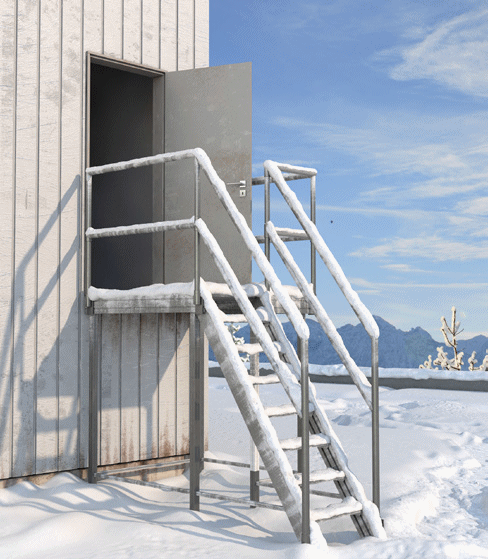
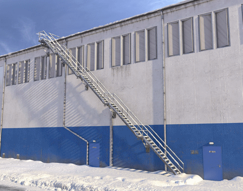
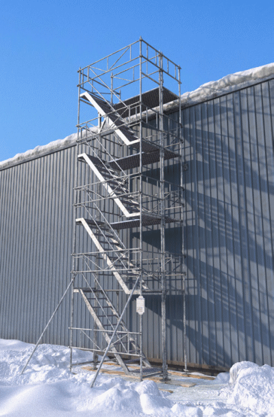
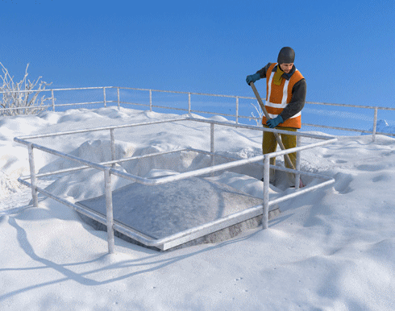
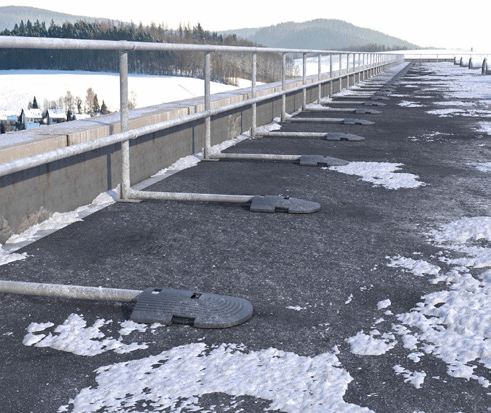
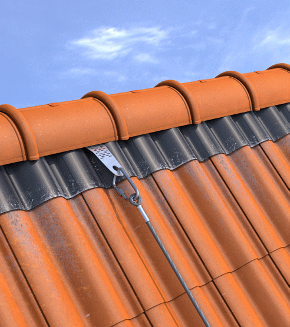

Für spätere Instandhaltungsarbeiten, insbesondere das Räumen von Schnee, müssen sichere Verkehrswege und Arbeitsplätze vorhanden sein. Dies ist bereits bei der Planung eines Neu-/ oder Umbaus zu beachten. Aber auch an bestehenden Gebäuden sind sichere Verkehrswege und Arbeitsplätze zum Schneeräumen einzurichten, sofern dies die Bedarfsermittlung unter Berücksichtigung der zu erwartenden Schneelasten ergibt. Bei deren Gestaltung sind das Räumkonzept sowie die Abwurfstellen, die benötigten Arbeitsmittel und deren Transport auf die Dachfläche sowie der Schneetransport auf dem Dach zu berücksichtigen.
Sind auf Dächern keine kollektiven Absturzsicherungen vorhanden, muss der Zugang zum Dach verwehrt bzw. auf unterwiesenes Personal beschränkt werden, z. B. durch internen Dachbegehungsschein und/oder Schlüsselregelung.
Innenliegende, witterungsunabhängige Verkehrswege, z. B. Treppenaufgänge, sind zu bevorzugen. Ausnahmen sind zulässig, wenn z. B. bauliche Gegebenheiten innenliegende Treppen nicht zulassen oder die Gefährdungsbeurteilung ergeben sollte, dass der Verkehrsweg auf das Dach durch andere, mindestens ebenso sichere Maßnahmen erreicht werden kann, z. B. außenliegende Treppen oder Treppentürme.
Dachaufbauten mit Tür sind als Zugang zur Dachfläche einem Durchstieg durch eine Lichtkuppel vorzuziehen. Die Tür sollte nach innen zu öffnen sein, da vor der Tür liegende Schneemassen die Tür blockieren können.
Alternativ kann ein Dachaufbau mit einer außenliegenden Gitterrosttreppe ausgeführt sein (Abbildung 10).

Abb. 10 Flachdachzugang von innen
Außenliegende Zugänge können sowohl fest angebracht (Abbildung 11) als auch temporär aufgestellt werden (z. B. Gerüsttreppentürme). Treppen haben den Vorteil, dass sie sicher begangen und benötigte Gerätschaften von Hand mitgenommen werden können.

Abb. 11 Flachdachzugang über eine Außentreppe
Temporäre Treppentürme sind rechtzeitig standsicher aufzustellen (Abbildung 12). Bei der Auswahl des Standplatzes sind die auf dem Betriebsgelände angelegten Verkehrs- und Rettungswege zu berücksichtigen.

Abb. 12 Beispiel für einen temporär erstellten Treppenturm
Kriterien zur Auslegung und Anzahl der Treppen bzw. der Treppentürme für die Schneeräumung sind u. a.
Sind Dachflächenfenster vorhanden, können diese als Zugang genutzt werden. Beim Ausstieg müssen persönliche Schutzausrüstungen gegen Absturz verwendet werden. Im Bereich des Dachausstieges muss im Abstand von 0,6 m mindestens eine Anschlageinrichtung für Persönliche Schutzausrüstungen gegen Absturz vorhanden sein (siehe DIN 4426).
Wenn am Steildach ein Zugang von innen nicht vorhanden oder möglich ist, muss ein Zugang von außen geschaffen werden. Hierzu können die vor genannten Zugangangsmöglichkeiten zum Flachdach sinngemäß auch zum Steildach eingesetzt werden (s. Abschnitt 10.1.1 und 10.1.2). Dabei ist die Position der Zugänge in Abhängigkeit des Sicherungsverfahrens (s. Abschnitt 10.2.2) und der auf dem Dach außen befindlichen Anschlageinrichtungen festzulegen.
Die Gestaltung von Verkehrswegen und Arbeitsplätzen für das Schneeräumen auf Dächern ist von der Dachform, der Art der Dacheindeckung und dem Räumkonzept abhängig. Absturzsicherungen sind ab 2,00 m Absturzhöhe notwendig. Aber auch bei niedrigeren Absturzhöhen können sich im Rahmen der Gefährdungsbeurteilung Maßnahmen zum Schutz gegen Absturz ergeben.
Die Dachkonstruktion, wie Oberlichter und Glasabdeckungen, sollten zur Verhinderung eines Durchsturzes aus Bauteilen bestehen, die betretbar und durchsturzsicher sind. Sind dennoch nicht betretbare Oberlichter und Glasabdeckungen eingebaut, müssen diese mit dauerhaften Umwehrungen, Brüstungen oder Unterfangungen ausgestattet sein (Abbildung 13).

Abb. 13 Dauerhafte Umwehrung einer Lichtkuppel
Zum Schutz gegen Absturz nach Außen sind z. B. bei Flachdächern dauerhafte Umwehrungen vorzusehen, wie z. B. eine Attika und/oder ein Geländer. Bei der Festlegung der Höhe der Umwehrung ist die jeweils geltende Landesbauordnung und die im Rahmen des Schneemanagements kalkulierte Schneehöhe zu berücksichtigen (Abbildung 14). PSA gegen Absturz ist auf einem Flachdach für Räumarbeiten erfahrungsgemäß nicht geeignet.

Abb. 14 Geländer an der Flachdachattika
Für Steildächer sind temporäre Auffangeinrichtungen (z. B. Dachfanggerüste) vorzusehen, da dauerhafte Absturzsicherungen nicht praktikabel sind. Können Auffangeinrichtungen nicht verwendet werden, ist in Abhängigkeit der Räumungsstrategie die Verwendung von PSA gegen Absturz zu planen. Für die Benutzung von PSA gegen Absturz auf einem Steildach ist ein sicherer Standplatz (z. B. Beschaffenheit und Neigung der Standplatzfläche) Voraussetzung. Ist dieser nicht vorhanden, ist die Anwendung von seilunterstützten Zugangs- und Positionierungsverfahren einzuplanen. In beiden Fällen sind geeignete Anschlageinrichtungen möglichst am Dachfirst zu montieren (Abbildung 15). Dadurch ist auch verhindert, dass diese durch abrutschende Schneemassen beschädigt werden können.

Abb. 15 Anschlageinrichtung am Dachfirst